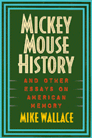

<body bgcolor="#FFFFFF" text="#000000" link="#0000FF" vlink="#CC0000" alink="#CC0000"><center><hr width="350" size="1" align="center" noshade>A long-awaited dispatch from the history front in today's culture war<hr width="350" size="1" align="center" noshade><p><a href="https://cdcshoppingcart.uchicago.edu/Cart/ChicagoBook.aspx?ISBN=9781566394444&&PRESS=temple" target="_top">Buy this book!</a> | <a href="https://cdcshoppingcart.uchicago.edu/Cart/Cart.aspx?PRESS=temple" target="_top">View Cart</a> | <a href="https://cdcshoppingcart.uchicago.edu/Cart/Cart.aspx?PRESS=temple" target="_top">Check Out</a></p><p></p></center><!--none//--><h1>Mickey Mouse History and Other Essays on American Memory</h1>
<h3>Michael Wallace</h3>
<P>cloth 1-56639-444-9 $69.95, Apr 96, <FONT COLOR=#990033>Out of Print</FONT>
<br>paper 1-56639-445-7 $30.95, Apr 96, <FONT COLOR=#990033>Available</FONT>
<BR> 336 pp
6x9
5&nbsp;figures 10&nbsp;halftones
</P><h3 align="center"><P><font color="#996633">Historic Preservation Book Prize, The Center for Historic Preservation at Mary Washington College,
1997</font></P>
</H3>
<BLOCKQUOTE><I>"Far more Americans learn their history from movies and TV and in venues like theme parks and museums, than from academic monographs. Yet Mike Wallace is one of the few historians to subject such forms of public history to serious analysis. With verve, humor, and above all a remarkable historical imagination, Wallace examines what visions of our nation's past are being conveyed to the public, and what in our history is being ignored or silenced. The result is fascinating and illuminating foray into a neglected aspect of modern American culture."</I>
<br>&#151<b>Eric Foner</b><I></I></BLOCKQUOTE>
<p>This is a book about why history matters. It shows how popularized historical images and narratives deeply influence Americans' understanding of their collective past. A leading public historian, Mike Wallace observes that we are a people who think of ourselves as having shed the past but also avid tourists who are on a "heritage binge," flocking by the thousands to Ellis Island, Colonial Williamsburg, or the Vietnam Memorial.
<p>Wallace probes into the trivialization of history that pervades American culture as well as the struggles over public memory that provoke stormy controversy. The imbroglio surrounding the National Air and Space Museum's proposed Enola Gay exhibit was reported as centering on why the U.S. government decided to use the A-Bomb against Japan. Wallace scrutinizes the actual plans for the exhibit and investigates the ways in which the controversy drew in historians, veterans, the media, and the general public.
<p>Whether his subject is multimillion dollar theme parks owned by powerful corporations, urban museums, or television docudramas, Mike Wallace shows how their depictions of history are shaped by assumptions about which pasts are worth saving, whose stories are worth telling, what gets left out, and who is authorized to make the decisions.
<BR>&nbsp;<h2>Excerpt</h2><P>Excerpt available at <a href="http://www.temple.edu/tempress">www.temple.edu/tempress</a></p>
<BR>&nbsp;<h2>Reviews</h2>
<p><I>"</I>Mickey Mouse History<I> is a highly entertaining book about a serious and sobering subject: uses and misuses of the American past in our own time. This book explains, better than any other, why history has been at the very heart of the culture wars in recent times. Wallace provides an animated inquiry into history as a hall of distorting mirrors, with particular attention to those who benefit and those who are deceived. This is a superb, eminently readable book. It deserves a very wide audience."</I>
<br>&#151<b>Michael Kammen</b>, President, Organization of American Historians
<p><I>"Mike Wallace has been running circles around history museums for twenty years&#151sometimes nipping at their heels, sometimes hollering encouragement from the flanks, now and then setting the pace and breaking the trail. </I>Mickey Mouse History<I> (itself anything but) shows better than any book so far how public debate keeps public history in shape."</I>
<br>&#151<b>Cary Carson</b>, Vice President for Research, the Colonial Williamsburg Foundation
<p><i>"...this is a terrific book&#151a deeply humane, often funny, empirically rich, and theoretically sophisticated look at a range of important topics and issues in the field of public history."</i>
<br>&#151<b>H-Net</b>
<p><i>"...a small price to pay for the meticulous tour of public history that this volume offers and for it's ability to remind historians that their essential vocation is to serve as the public's memory."</i>
<br>&#151<b><i>The Journal of American History</i></b>
<p><i>"This is a well-written, fascinating book on the key issues related to the presentation of American history, the preservation of important historical sites and the use of American history by professional historians and corporate purveyors of American memories."</i>
<br>&#151<b><i>History Teacher</i></b>
<BR>&nbsp;<h2>Contents</h2><P>
<p>Introduction: Battlefields of Memory
<p><b>Section I</b>
<br>1. Visiting the Past: History Museums in the United States
<br>2. Razor Ribbons, History Museums, and Civic Salvation
<br>3. Boat People: Immigrant History at the Statue of Liberty and Ellis Island
<br>4. Progress Talk: Museums of Science, Technology, and Industry
<br>5. Industrial Museums and the History of Deindustrialization
<br>6. The Virtual Past: Media and History Museums
<br>7. Museums and Controversy
<p><b>Section II</b>
<br>8. Mickey Mouse History: Portraying the Past at Disney World
<br>9. Disney's America
<p><b>Section III</b>
<br>10. Preserving the Past: A History of Historic Preservation
<br>11. Preservation Revisited
<p><b>Section IV</b>
<br>12. Ronald Reagan and the Politics of History
<br>13. The Battle of the <I>Enola Gay</I>
</P><BR>&nbsp;<H2>About the Author(s)</H2>
<table><tr><td valign="top"><img src="/tempress/authors/1174_au.gif" height="90" width="75"></td><td width="100%" valign="middle"><p><b>Mike Wallace</b> is Professor of History at John Jay College, City University of New York. He is the co-author, with Edwin G. Burrows, of <I>Gotham: A History of New York City to 1898</I>, winner of the 1999 Pulitzer Prize for History.</P></td></tr></table>
<BR><H2>Subject Categories</H2>
<p><A HREF="/tempress/history.html" TARGET="_top">History</a>
<BR><A HREF="/tempress/american.html" TARGET="_top">American Studies</a>
</p>
<BR><h2 class="inpageheading">In the series</H2>
<P><I><a href="http://www.temple.edu/tempress/critical.html" onMouseOver="window.status='Click for other books in this series!'; return true;" onMouseOut="window.status=''; return true;" target="_top">Critical Perspectives on the Past</a></i>, edited by <a href="http://www.temple.edu/tempress/authors/benson_memoriam.html" target="_top">Susan Porter Benson</a>, Stephen Brier, and Roy Rosenzweig.
</p><p><i>Critical Perspectives on the Past</i>, edited by Susan Porter Benson, Stephen Brier, and Roy Rosenzweig, is concerned with the traditional and nontraditional ways in which historical ideas are formed. In its attentiveness to issues of race, class, and gender and to the role of human agency in shaping events, the series is as critical of traditional historical method as content. Emphasizing that history is itself an interpretation of material events, the series demonstrates that the historian's choices of subject, narrative technique, and documentation are politically as well as intellectually constructed.</p>
<p align="center"><a href="https://cdcshoppingcart.uchicago.edu/Cart/ChicagoBook.aspx?ISBN=9781566394444&&PRESS=temple" target="_top">Buy this book!</a> | <a href="https://cdcshoppingcart.uchicago.edu/Cart/Cart.aspx?PRESS=temple" target="_top">View Cart</a> | <a href="https://cdcshoppingcart.uchicago.edu/Cart/Cart.aspx?PRESS=temple" target="_top">Check Out</a></p><p><font face="Arial" size="1"><a href="copyright.html" onMouseOver="window.status='Web Copyright Policy';return true;" onMouseOut="window.status=''" title="Web Copyright Policy">&copy;</a> 2015 <a href="http://www.temple.edu" target="new" onMouseOver="window.status='Link to Temple University home page';return true;" onMouseOut="window.status=''" title="Link to Temple University home page">Temple University</a>. All Rights Reserved. http://www.temple.edu/tempress/titles/1174_reg.html</font></p>